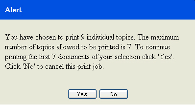

Du kan skriva ut ett eller flera avsnitt i hjälpen.
Om den här uppgiften
Så här skriver du ut ett eller flera avsnitt i navigeringsvyn:
- Klicka på Skriv ut avsnittet (
 ) i verktygsfältet.
) i verktygsfältet.- Om du vill skriva ut endast det markerade avsnittet väljer du Skriv ut det valda avsnittet.
- Om du vill skriva ut det markerade avsnittet med alla underavsnitt väljer du Skriv ut det valda avsnittet med alla underavsnitt så öppnas förhandsgranskningsfönstret.
- Om du vill ändra utskriftsformatet innan du börjar skriva ut väljer du i förhandsgranskningsfönstret och ändrar inställningarna.
- Klicka på Skriv ut i fönstret Skriv ut. Begränsning:
maxTopics och maxConnections är begränsningar för snabbutskrift. De är parametrar som du definierar i inställningarna för resursoptimering innan du startar systemet.
Om det antal avsnitt du vill skriva ut överstiger det definierade värdet för maxTopics visas ett varningsmeddelande.Bild 1. Varningsmeddelande- Om du vill använda gränsen för maxTopics och skriva ut klickar du på Ja.
- Om du vill avbryta utskriften klickar du på Nej.
Om antalet skrivaranslutningar överstiger det definierade värdet för maxConnections visas ett felmeddelande.Bild 2. Felmeddelande
- Klicka på OK. Försök igen senare.